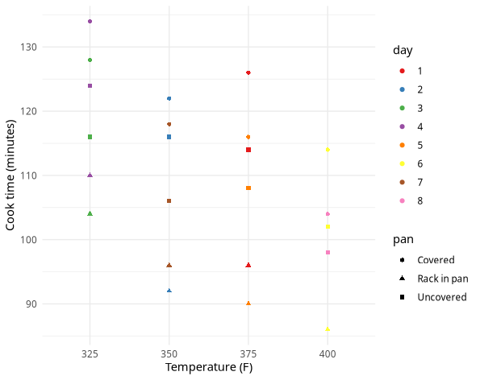

ggplot2 v. r2d3Consider a dataset describing the cooking times of potroasts under various conditions. Suppose that we want to plot these cooking times, using X-axis positioning, shape, and color to represent the different conditions.
ggplot2 exampleMade with ggplot2.
r2d3 example
Made with the r2d3 interface between R and D3.js.